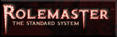

The Unravelling
The Unravelling is a world just beginning to recover from cataclysm. The
world was plunged into chaos centuries ago by the appearance of the Tumult,
violent conflagrations of raw Essence which swept across land and sea. These
Maelstrom have ripped up the ancient civilization of the Overlords, and
irrevocably altered the patterns of life for those who remain. Thirty years
ago the Tumult began to wane, until in the present day the Storms are
encountered more often in stories than in actual fact.
The most perilous danger is not that the fabric of society has been ripped
apart by the Tumult. It is that the pieces which remain have begun to unravel
at the edges.
The Chronicle
The chronicle of each gaming session is listed here. Sometimes they are even
accurate.
History, cultures, and assorted information about the campaign are
introduced in a series of web pages below.
Other Passages
The same gaming group has played in several previous campaigns, including the
Return to the Tomb of Horrors and a techno-Kulthean campaign. The Chronicles from these campaigns
remain online.
About these pages...
Finally, if you enjoy this page, would like information on how it was
created or what plug-ins you might need, see the
links to elsewhere. There is also a
feedback page.